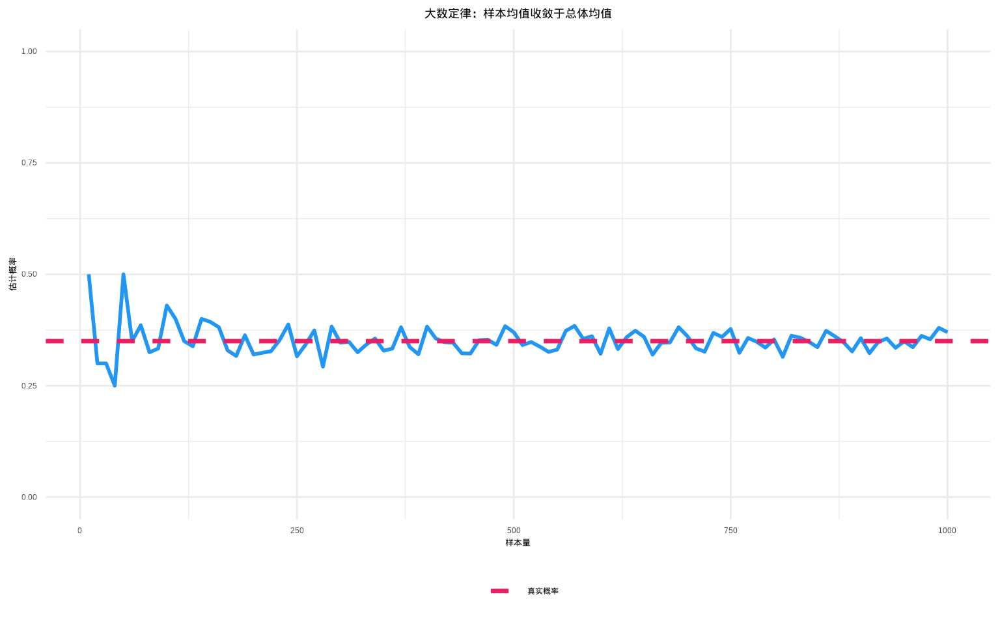
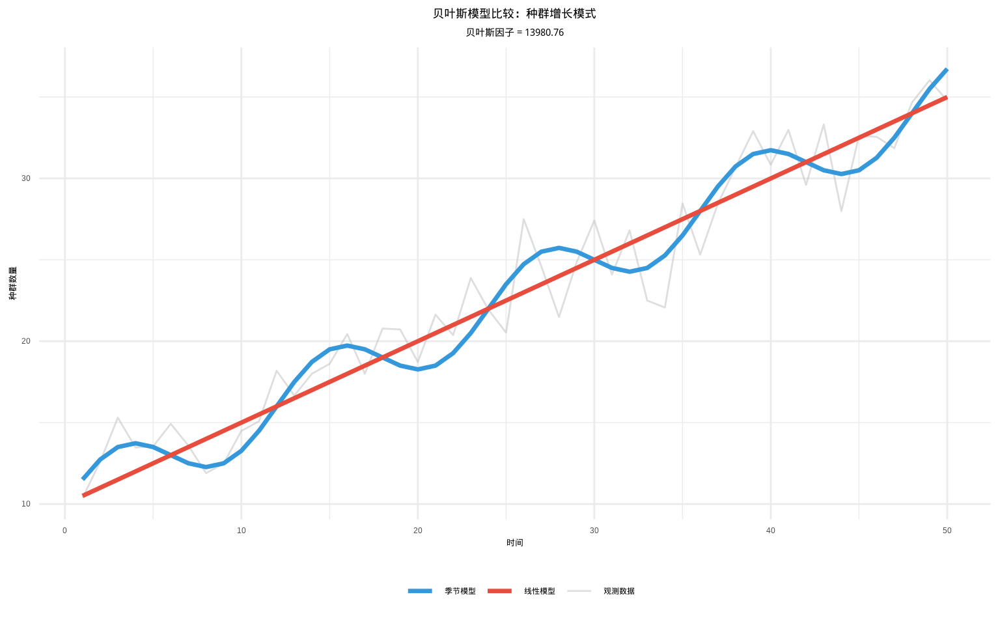
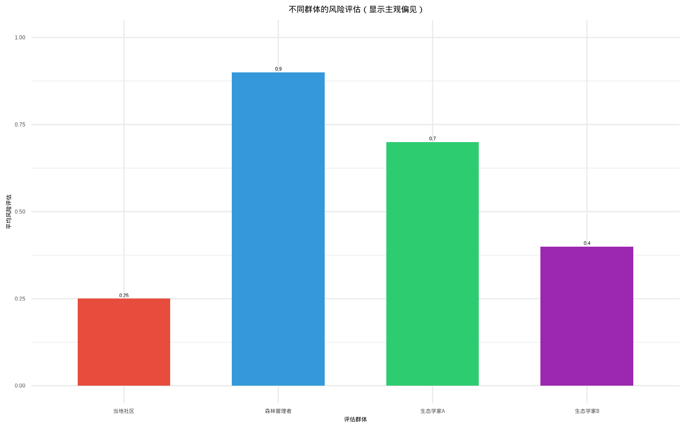

2 概率与分布
2.1 蚂蚱午餐与概率
2.1.1 一只蚱蜢的午餐
想象一下，你是校园里一只普通的蚱蜢。在你面前，是三片不同的草地：一片是茂盛的黑麦草，一片是点缀着雏菊的混合草甸，另一片则是以三叶草为主。对你来说，这不仅仅是风景，而是你的”餐桌”。现在，我要向你提出一个看似简单，实则充满了不确定性的问题：你下一顿午餐，会选择在哪一种植物上进食？
这个简单的问题背后，隐藏着生态学研究的核心挑战——如何理解和量化生物行为中的不确定性。你的选择可能受到多种因素的影响：黑麦草的高营养价值、混合草甸的隐蔽性、三叶草的特殊口感，甚至是当天的天气、你的饥饿程度，或是周围是否有捕食者。每一个微小的变量都可能改变你的最终决定。
作为一名生态学从业者，我的任务就是量化你的这种”选择偏好”。而这个”偏好”，本质上就是概率——一个介于0和1之间的数字，用来描述某个不确定事件（蚱蜢选择某种植物）发生的可能性。概率为0意味着绝不可能，概率为1意味着必然发生。但现实世界中的概率往往介于这两个极端之间，反映了生物决策中的复杂性和随机性。
那么，我该如何度量和理解你这只蚱蜢的”选择概率”呢？这不仅仅是简单的计数问题，而是需要建立数学模型来描述你的行为模式。概率理论为我们提供了三种不同的视角来理解这种不确定性：基于理想假设的古典概率、基于实际观察的频率概率，以及能够结合新证据不断更新认知的贝叶斯概率。每一种方法都有其独特的价值和适用场景，共同构成了我们理解自然界的数学工具箱。
2.1.2 理想的猜测——古典概率
一开始，我没有任何观察数据。我只能基于“公平原则”进行一个理想化的猜测。我发现，你活动的区域里，黑麦草、混合草甸和三叶草的面积恰好相等。于是，我假设你选择任何一种植物的可能性都是完全一样的。
- 这就是古典概率（先验概率）。 它的核心是“等可能性”。在这个理想模型里，有三种可能的结果，且每一种结果出现的可能性相同。
- 计算公式是： \[P(\text{蚱蜢选择黑麦草}) = \frac{\text{有利于该事件的结果数}}{\text{所有可能的结果数}} = \frac{1}{3}\]
- 这种概率源于逻辑推理，而非实际数据。它简洁优美，但现实世界往往并非如此“公平”。毕竟，你可能就是偏爱某种口味呢？
2.1.2.1 核心思想：等可能性
想象一下，你正在和一位朋友玩一个完全公平的掷骰子游戏。骰子质地均匀，形状完美。那么，在掷出之前，你会认为掷出“1点”的可能性有多大？你的直觉很可能会告诉你：六分之一。
支撑这个直觉的，就是古典概率（也称为先验概率）的思维方式。它是概率论中最古老、最直观的定义，源于对如赌博等机会游戏的研究。古典概率的历史可以追溯到17世纪，当时法国数学家布莱兹·帕斯卡和皮埃尔·德·费马通过书信往来，共同解决了赌博中的概率问题，为现代概率论奠定了基础。
古典概率的核心前提是 “等可能性”。即一个随机试验的所有可能结果，发生的可能性必须完全相同。这个假设看似简单，实则蕴含着深刻的数学哲学思想。等可能性的概念建立在对称性原则之上。当我们说一个骰子的六个面”等可能”时，实际上是在说这个骰子在几何形状、质量分布等方面具有完美的对称性。这种对称性确保了每个面朝上的物理条件完全相同。
在生态学中，等可能性的假设意味着我们暂时忽略了所有可能影响生物选择的因素，将系统简化为一个完全随机的过程。这种简化虽然不完美，但为我们提供了一个理论基准，帮助我们理解”如果世界是完全随机的，会发生什么”。
2.1.2.2 定义与公式
在满足“等可能性”的试验中，我们称每个单一的可能结果为一个 “基本事件” 。所有基本事件构成的集合，就是 “样本空间”。样本空间的概念是概率论的基础，它定义了所有可能发生的结果。
构建样本空间需要仔细考虑试验的所有可能结果。例如，在蚱蜢选择植物的例子中，样本空间包含三个基本事件：{选择黑麦草，选择混合草甸，选择三叶草}。每个基本事件都是互斥且完备的——互斥意味着不可能同时发生两个事件，完备意味着涵盖了所有可能性。
古典概率的定义公式简洁而优美：
\[P(A) = \frac{\text{事件A包含的基本事件个数}}{\text{样本空间中基本事件的总数}}\]
\(P(A)\)： 事件A发生的概率。分子： 你关心的事件A包含了多少种可能的结果。分母： 整个试验一共有多少种可能的结果。
这个公式计算出的概率，是一个介于0和1之间的数。\(P(A)=0\)表示事件A不可能发生；\(P(A)=1\)表示事件A必然发生。概率的归一化条件要求所有基本事件的概率之和等于1。
2.1.2.3 概率的三个基本属性
无论采用哪种概率定义（古典、频率或贝叶斯），概率都必须满足三个基本公理，这些公理由俄罗斯数学家安德雷·柯尔莫哥洛夫在1933年提出，为现代概率论奠定了坚实的数学基础。
公理1：非负性 对于任意事件A，其概率总是非负的： \[P(A) \geq 0\]
这个公理确保了概率的合理性。在生态学中，这意味着任何生态事件的发生概率都不可能为负值，无论这个事件多么罕见或不可能。
公理2：规范性 整个样本空间的概率为1： \[P(\Omega) = 1\]
其中\(\Omega\)表示样本空间，即所有可能结果的集合。这个公理表明”必然事件”的概率为1。在蚱蜢的例子中，样本空间包含三种植物选择，因此\(P(\text{选择任意植物}) = 1\)。
公理3：可加性 对于任意两个互斥事件A和B（即A和B不能同时发生）： \[P(A \cup B) = P(A) + P(B)\]
这个公理可以推广到有限个或可数无限个互斥事件。在生态学中，这意味着如果两个生态事件不可能同时发生（如”蚱蜢同时选择黑麦草和混合草甸”），那么它们中至少有一个发生的概率等于各自概率之和。
这三个公理共同构成了概率论的数学基础，确保了概率计算的逻辑一致性。从这些基本公理出发，我们可以推导出概率的所有其他性质，如： - \(P(A^c) = 1 - P(A)\)（互补事件的概率） - 如果\(A \subseteq B\)，则\(P(A) \leq P(B)\)（概率的单调性） - \(P(A \cup B) = P(A) + P(B) - P(A \cap B)\)（一般加法公式）
这些性质在生态学研究中具有重要的应用价值，帮助我们建立合理的概率模型并进行正确的统计推断。
2.1.2.4 生态学中的古典概率应用
尽管古典概率的假设很强，但在某些生态学场景中仍然有其应用价值：
1. 理想化的种群分布模型
当我们研究物种在栖息地中的分布时，可以先建立一个”等可能性”的基准模型。例如，假设一个森林中有三种不同类型的微生境（阳光充足区、半阴区、全阴区），我们可以先假设物种在这三种生境中出现的概率相等，然后与实际观测数据进行比较。这种比较可以帮助我们识别物种的真实偏好。
2. 随机抽样设计
在生态调查中，我们经常需要随机选择样方位置。如果样方选择过程真正实现了”等可能性”，那么每个位置被选中的概率应该完全相同。这种设计确保了样本的代表性，避免了选择偏差。
3. 遗传学中的孟德尔定律
在种群遗传学中，孟德尔的遗传定律实际上就是基于古典概率的等可能性假设。当亲本的基因型确定后，子代获得特定基因组合的概率可以通过古典概率计算。
2.1.2.5 古典概率的局限性
尽管古典概率模型非常优美，但它的”理想化”也恰恰是它在现实应用中的主要局限：
1. “等可能性”假设过于苛刻
现实世界中，很多情况不满足等可能性。生态系统的复杂性使得”等可能性”的假设往往过于简化：
回到蚱蜢的例子： 我们能说蚱蜢选择黑麦草、混合草甸和三叶草的可能性完全相等吗？几乎不能！植物的营养价值、口感、防御性化学物质、空间分布、季节变化等因素都存在差异，这些都会破坏”等可能性”假设。
一枚实际硬币： 可能因工艺瑕疵导致正面和反面出现的概率并非精确的50%。研究表明，大多数硬币实际上有51%-49%的轻微偏差。
一只青蛙选择池塘： 池塘的大小、水深、水质、是否有天敌、食物丰富度等因素必然会影响其选择，使得”等可能性”的假设不成立。
2. 样本空间必须是有限集合
古典概率要求可能的结果是有限可数的。对于连续性的问题（如蚱蜢的精确跳跃距离是1.253米），因为结果有无限多个，古典概率便无能为力。生态学中的许多测量值都是连续变量，如温度、湿度、生物量等，这些都需要连续概率分布来描述。古典概率还要求明确知道总体大小，但生态学中总体往往无限或未知：
# 有限总体问题示例：估计森林中濒危物种的数量
set.seed(222)
# 实际濒危物种数量（未知）
true_rare_species <- 15
# 调查发现的物种数量（抽样偏差）
observed_species <- 8
survey_effort <- 50 # 调查努力程度
detection_prob <- observed_species / survey_effort
estimated_total <- observed_species / detection_prob
cat("实际濒危物种数量:", true_rare_species, "\n")## 实际濒危物种数量: 15## 观测到的物种数量: 8## 检测概率: 0.16## 估计的物种总数: 50## 估计误差: 353. 无法处理主观概率
古典概率是客观的，基于计数。但它无法处理如”我认为明天会下雨的可能性是70%“这种基于个人知识、经验和信念的主观判断。在生态学预测中，专家意见和经验判断往往很重要，但这些主观因素无法用古典概率来量化。
4. 忽略历史依赖性和学习效应
古典概率假设每次试验都是独立的，但生物行为往往具有记忆性和学习能力。如果蚱蜢昨天在黑麦草上获得了丰富的营养，它今天更可能再次选择黑麦草。这种历史依赖性破坏了古典概率的独立性假设。
2.1.2.6 从古典概率到现代概率论
古典概率虽然简单，但它为现代概率论的发展奠定了基础。20世纪初，俄罗斯数学家安德雷·柯尔莫哥洛夫建立了概率论的公理化体系，将概率定义为满足特定性质的测度函数。这个公理化体系能够同时涵盖古典概率、几何概率和统计概率，为概率论提供了坚实的数学基础。
总结来说，古典概率如同几何学中的完美圆规和直尺，它描绘了一个规则、公平、易于理解的理想世界。它是我们概率之旅的起点，教会我们”计数”的重要性，培养了我们对随机现象的基本直觉。当我们告别这个理想世界，步入充满复杂性和不确定性的真实生态学领域时，频率概率和贝叶斯概率等更强大的工具便会接过接力棒，帮助我们更好地刻画那只真实蚱蜢的、受到多种因素影响的午餐选择。古典概率的价值不在于它的现实准确性，而在于它为我们的思维提供了一个清晰的起点和参照系。
2.1.3 数据的语言——频率概率
为了了解真相，我决定进行实地观察。我在一周里，每天中午记录你进食的位置，一共记录了70次选择。数据如下：45次在黑麦草上，20次在混合草甸上，5次在三叶草上。
- 这时，我使用的是频率概率。 它的核心思想是：一个事件发生的概率，等于它在长期重复试验中出现的频率。
- 度量方式为： \(P(\text{选择黑麦草}) \approx \frac{45}{70} \approx 0.64\)； \(P(\text{选择混合草甸}) \approx \frac{20}{70} \approx 0.29\)； \(P(\text{选择三叶草}) \approx \frac{5}{70} \approx 0.07\)。
- 这些数字（0.64， 0.29， 0.07）就是基于客观数据对你进食偏好的度量。它们告诉我，你的偏好并非均等，而是对黑麦草有强烈的倾向性。大数定律在这里默默起作用：观察的次数越多，这个频率就会越稳定地接近你内在的、真实的”偏好概率”。
2.1.3.1 核心思想：经验主义与重复试验
频率概率（也称为统计概率）的核心思想源于经验主义哲学——知识来自于观察和经验。与古典概率的”先验”推理不同，频率概率是”后验”的，它基于实际收集的数据。
大数定律的数学基础
大数定律是频率概率的理论支柱。这个定律告诉我们：当试验次数足够多时，事件发生的频率会稳定地趋近于其真实的概率。这种稳定性不是偶然的，而是概率论的基本规律。
在生态学中，频率概率意味着我们通过系统的观察来了解生物行为的真实模式。每一次观察都是对”真实概率”的一次逼近，随着观察次数的增加，我们的估计会越来越准确。
概率收敛理论是统计推断的数学基础，帮助我们理解样本统计量如何趋近于总体参数。

频率概率的现实类比
就像天气预报：气象学家通过分析多年的气象数据，得出某地区在特定季节下雨的概率。
就像质量控制：工厂通过检测大量产品的质量，估计产品合格率。
就像医学研究：通过大规模的临床试验，确定某种药物的有效率。
频率概率让我们从”理想世界”走向”真实世界”，用数据说话，用事实说话。
2.1.3.2 定义与计算方法
频率概率的定义基于长期重复试验的思想。对于一个随机事件A，其频率概率定义为：
\[P(A) = \lim_{n \to \infty} \left( \frac{\text{事件A发生的次数}}{\text{总试验次数}} \right)\]
其中\(n\)表示试验的总次数。在实际应用中，我们通常用有限次试验的频率来近似真实的概率：
\[P(A) \approx \frac{\text{事件A发生的次数}}{\text{总试验次数}}\]
频率概率的计算步骤
设计观察方案：确定观察的时间、地点、方法，确保观察的系统性和代表性。
收集数据：按照设计方案进行重复观察，记录每次试验的结果。
统计频率：计算事件发生的次数与总观察次数的比值。
评估可靠性：根据样本大小评估估计的可靠性，样本越大，估计越准确。
样本大小的重要性
在频率概率中，样本大小（观察次数）至关重要。小样本可能受到随机波动的影响，而大样本能够更好地反映真实的概率分布。生态学研究通常需要足够的样本量来获得可靠的估计。
2.1.3.3 生态学中的频率概率应用
频率概率在生态学研究中有着广泛的应用：
1. 种群密度估计
通过样方法调查物种在特定区域的分布频率，可以估计整个种群的密度。例如，在100个样方中发现目标物种的样方比例为30%，可以推断该物种在整个区域的分布概率约为30%。
2. 行为生态学研究
通过观察动物行为的频率，可以量化其行为偏好。例如，观察鸟类在不同树种上筑巢的频率，可以了解其对栖息地的选择偏好。
3. 物种分布模型
基于物种在不同环境条件下的出现频率，可以建立物种分布模型，预测物种在未调查区域的分布概率。
4. 生态风险评估
通过分析历史数据中不利事件（如物种灭绝、生态系统崩溃）的发生频率，可以评估未来的生态风险。
2.1.3.4 频率概率的优势与局限性
频率概率方法在生态学研究中展现出显著的优势。首先，其客观性确保了概率估计基于实际观察数据而非主观臆断，这为生态学研究提供了坚实的实证基础。通过系统记录生物行为或环境变化，研究者能够获得反映真实世界规律的量化结果。其次，频率概率具有可验证性，任何研究者都可以通过重复相同的观察或实验来验证结果的可靠性，这符合科学研究的可重复性原则。在实用性方面，频率概率适用于各种现实世界的概率估计问题，从物种分布调查到种群动态监测，都能提供有效的量化工具。最重要的是，频率概率具有渐进精确性，随着样本量的增加，根据大数定律，频率估计会越来越接近真实的概率值，这种自我修正的特性使其成为长期生态监测的理想工具。
然而，频率概率方法也存在明显的局限性。需要大量数据是其最突出的限制，为了获得可靠的估计，通常需要大量的观察数据，这在某些稀有物种或难以观察的行为研究中可能难以实现。无法处理一次性事件是另一个重要局限，对于无法重复的事件（如特定物种的灭绝、罕见自然灾害等），频率概率难以提供有意义的估计。历史依赖性使得基于历史数据的概率估计可能无法准确反映未来的变化，特别是在环境快速变化的背景下，过去的数据可能无法预测未来的趋势。此外，样本偏差问题不容忽视，如果样本选择不具有代表性，或者观察过程中存在系统性偏差，频率估计会产生误导性的结果。这些局限性提醒我们在应用频率概率时需要谨慎考虑其适用条件，并在必要时结合其他概率方法进行综合分析。
频率概率需要大量重复试验，但生态学调查往往样本量有限：

2.1.4 动态的更新——贝叶斯概率
然而，故事还没结束。一位植物学家告诉我，昨天刚下过雨，三叶草在雨后会特别鲜嫩多汁，营养价值更高。这条新信息（证据）改变了我对你的判断。我不能完全忽略我之前70次观察的结论（先验知识），但我也必须考虑“雨后三叶草更诱人”这个新事实。
- 贝叶斯概率登场了。 它是一种“信仰”的概率，代表着在考虑了新证据之后，我对某个假设（你会选择三叶草）的置信度。
- 它的思维是动态更新的： 我原来的信念（\(P(\text{选择三叶草}) = 0.07\)）是先验概率。得到”昨天下过雨”这个证据后，我利用一个公式（贝叶斯定理）将先验概率和证据结合起来，得到一个更新后的后验概率。
- 这个后验概率可能变成 \(P(\text{选择三叶草} \mid \text{昨天下过雨}) = 0.25\)。这意味着，在”雨后”这个条件下，我认为你选择三叶草的概率从7%显著提升到了25%。贝叶斯概率让我们的认知能够随着新证据的出现而不断进化，更像是一种科学的学习过程。
2.1.4.1 核心思想：主观信念与证据更新
贝叶斯概率（也称为主观概率）的核心思想源于认识论哲学——概率是对不确定性的主观度量。与频率概率的”客观”统计不同，贝叶斯概率是”主观”的，它反映了在给定证据条件下对某个假设的置信程度。
贝叶斯定理的数学基础
贝叶斯定理是贝叶斯概率的理论核心。要深入理解贝叶斯定理，我们需要先了解两个关键概念：条件概率和事件独立性。
2.1.4.2 条件概率：事件之间的依赖关系
条件概率 \(P(A|B)\) 表示在事件B已经发生的条件下，事件A发生的概率。这是贝叶斯定理的核心概念。
定义：如果 \(P(B) > 0\)，则 \[P(A|B) = \frac{P(A \cap B)}{P(B)}\]
生态学示例： - \(P(\text{选择三叶草})\) 是无条件概率 - \(P(\text{选择三叶草} \mid \text{昨天下过雨})\) 是条件概率
2.1.4.3 事件独立性：相互不影响的关系
两个事件A和B是独立的，如果其中一个事件的发生不影响另一个事件发生的概率。
定义：事件A和B独立当且仅当 \[P(A \cap B) = P(A) \times P(B)\] 等价地，当 \(P(B) > 0\) 且A和B独立时，\(P(A|B) = P(A)\)
生态学示例： - 如果蚱蜢每天的选择相互独立，那么昨天的选择不影响今天的选择 - 但如果雨后三叶草变得更有吸引力，那么”下雨”和”选择三叶草”就不是独立事件
2.1.4.4 贝叶斯定理的数学基础
理解了条件概率和独立性后，我们来看贝叶斯定理。这个定理提供了一个数学框架，用于在获得新证据时更新我们对某个假设的信念。其基本形式为：
\[P(H|E) = \frac{P(E|H) \times P(H)}{P(E)}\]
其中： - \(P(H|E)\) 是后验概率（在证据E条件下假设H的概率） - \(P(H)\) 是先验概率（在获得证据前对假设H的初始信念） - \(P(E|H)\) 是似然函数（在假设H成立时观察到证据E的概率） - \(P(E)\) 是证据的边际概率
2.1.4.5 全概率公式：计算证据的边际概率
在贝叶斯定理中，分母\(P(E)\)（证据的边际概率）通常需要通过全概率公式来计算。全概率公式将一个复杂事件的概率分解为多个互斥且完备的情况的概率之和。
全概率公式：如果事件\(B_1, B_2, \ldots, B_n\)构成一个完备事件组（即它们互斥且并集为样本空间），且\(P(B_i) > 0\)，则对任意事件A有： \[P(A) = \sum_{i=1}^{n} P(A|B_i) \times P(B_i)\]
生态学示例： 假设我们想知道”蚱蜢选择营养价值高的植物”的概率\(P(\text{高营养})\)。我们可以将其分解为： \[P(\text{高营养}) = P(\text{高营养}|\text{晴天}) \times P(\text{晴天}) + P(\text{高营养}|\text{雨天}) \times P(\text{雨天})\]

在贝叶斯定理中的应用： 在贝叶斯定理中，\(P(E)\)可以通过全概率公式计算： \[P(E) = P(E|H) \times P(H) + P(E|\neg H) \times P(\neg H)\] 其中符号\(\neg H\)表示”假设H不成立”，即事件H的补集。
这就得到了贝叶斯定理的完整形式： \[P(H|E) = \frac{P(E|H) \times P(H)}{P(E|H) \times P(H) + P(E|\neg H) \times P(\neg H)}\]
贝叶斯概率的哲学基础
贝叶斯概率体现了”学习”的本质。我们不是从零开始认识世界，而是基于已有的知识（先验），结合新的观察（证据），不断更新我们的认知（后验）。这种思维方式更接近人类实际的认知过程。
贝叶斯概率的现实类比
就像医学诊断：医生基于患者的症状（证据）更新对疾病的判断（假设）。
就像法庭审判：陪审团基于证据不断更新对被告有罪或无罪的信念。
就像天气预报：气象学家基于新的气象数据更新对天气变化的预测。
贝叶斯概率让我们从”静态世界”走向”动态世界”，用不断更新的信念来应对变化的环境。
2.1.4.6 定义与计算方法
贝叶斯概率的核心是贝叶斯定理，它提供了一个系统的方法来更新概率估计。通过全概率公式，我们得到了贝叶斯定理的完整形式，它考虑了所有可能的情况，确保概率的归一化。
贝叶斯更新的步骤
确定先验概率：基于已有知识或经验，确定对假设的初始信念\(P(H)\)。
计算似然函数：评估在假设成立时观察到证据的概率\(P(E|H)\)。
计算证据概率：计算观察到证据的总体概率\(P(E)\)。
计算后验概率：使用贝叶斯定理更新信念，得到\(P(H|E)\)。
先验概率的选择
在贝叶斯分析中，先验概率的选择很重要。常用的先验包括： - 无信息先验：当缺乏先验知识时使用 - 共轭先验：数学上方便计算的后验分布 - 经验先验：基于历史数据或专家意见
贝叶斯定理基础演示
# 贝叶斯定理基础演示
set.seed(1111)
# 先验概率：疾病在种群中的 prevalence
prior_prob <- 0.05 # 5%的个体患病
# 检测准确性
sensitivity <- 0.95 # 真阳性率
specificity <- 0.90 # 真阴性率
# 计算边际概率: P(阳性)
marginal_positive <- prior_prob * sensitivity + (1 - prior_prob) * (1 - specificity)
# 使用贝叶斯定理计算后验概率: P(患病|阳性)
posterior_prob <- (sensitivity * prior_prob) / marginal_positive
cat("贝叶斯定理基础演示（疾病检测）:\n")## 贝叶斯定理基础演示（疾病检测）:## 先验概率 P(患病): 0.05## 检测灵敏度 P(阳性|患病): 0.95## 检测特异度 P(阴性|健康): 0.9## 边际概率 P(阳性): 0.1425## 后验概率 P(患病|阳性): 0.33332.1.4.7 生态学中的贝叶斯概率应用
贝叶斯概率在现代生态学研究中越来越重要：
1. 物种分布模型
结合专家知识和观测数据，建立更准确的物种分布预测模型。先验可以反映物种的生态习性，后验则结合了实际的分布数据。
贝叶斯方法在物种分布建模中具有独特优势，能够结合专家知识和观测数据：
# 贝叶斯物种分布模型
set.seed(1414)
# 先验信息：专家对物种偏好的信念
expert_prior <- c(0.6, 0.3, 0.1) # 喜欢森林、草地、湿地的先验概率
habitat_types <- c("森林", "草地", "湿地")
# 观测数据：在不同栖息地中发现物种的次数
observations <- c(45, 20, 5) # 在森林、草地、湿地中的观测次数
total_observations <- sum(observations)
# 计算似然函数（基于观测数据）
likelihood <- observations / total_observations
# 计算证据概率
evidence <- sum(expert_prior * likelihood)
# 贝叶斯更新
posterior <- (expert_prior * likelihood) / evidence
# 结果分析
results <- data.frame(
栖息地类型 = habitat_types,
专家先验 = round(expert_prior, 3),
观测似然 = round(likelihood, 3),
贝叶斯后验 = round(posterior, 3)
)
cat("贝叶斯物种分布模型结果:\n")## 贝叶斯物种分布模型结果:## 栖息地类型 专家先验 观测似然 贝叶斯后验
## 1 森林 0.6 0.643 0.806
## 2 草地 0.3 0.286 0.179
## 3 湿地 0.1 0.071 0.015# 计算信息增益（KL散度）
kl_divergence <- sum(posterior * log(posterior / expert_prior))
cat("KL散度（信息增益）:", round(kl_divergence, 4), "\n")## KL散度（信息增益）: 0.1171# 贝叶斯因子计算
bayes_factor <- (posterior[1] / (1 - posterior[1])) / (expert_prior[1] / (1 - expert_prior[1]))
cat("贝叶斯因子（森林偏好）:", round(bayes_factor, 2), "\n")## 贝叶斯因子（森林偏好）: 2.77if (bayes_factor > 3) {
cat("强烈支持物种偏好森林的假设\n")
} else if (bayes_factor > 1) {
cat("微弱支持物种偏好森林的假设\n")
} else {
cat("证据不支持物种偏好森林的假设\n")
}## 微弱支持物种偏好森林的假设2. 种群动态预测
基于历史种群数据和环境变化信息，预测未来种群数量的变化趋势。贝叶斯方法能够处理参数的不确定性。
3. 保护优先级评估
结合多种证据（如栖息地质量、种群趋势、威胁因素）来评估物种的保护优先级。
4. 生态风险评估
在数据有限的情况下，结合专家判断和有限观测来评估生态风险。
5. 模型选择与平均
使用贝叶斯模型平均方法，综合考虑多个竞争模型的预测结果。
## 贝叶斯模型比较结果:## 模型 模型证据 贝叶斯因子
## 1 线性模型 7.411531e-52 1.00
## 2 季节模型 1.036188e-47 13980.76
敏感性分析与稳健性检验
# 贝叶斯敏感性分析
sensitivity_analysis <- function(prior_strength) {
# 不同先验强度下的后验分析
set.seed(1717)
# 生成生态数据
true_effect <- 0.8
observed_data <- rnorm(30, true_effect, 0.5)
# 不同先验强度
prior_sd <- 10 / prior_strength # 先验标准差随强度变化
# 简单贝叶斯更新
prior_mean <- 0
sample_mean <- mean(observed_data)
sample_sd <- sd(observed_data) / sqrt(length(observed_data))
# 后验计算（正态-正态共轭）
posterior_precision <- 1/prior_sd^2 + 1/sample_sd^2
posterior_mean <- (prior_mean/prior_sd^2 + sample_mean/sample_sd^2) / posterior_precision
posterior_sd <- sqrt(1 / posterior_precision)
return(c(posterior_mean, posterior_sd))
}
# 测试不同先验强度
prior_strengths <- c(0.1, 0.5, 1, 2, 5, 10)
sensitivity_results <- t(sapply(prior_strengths, sensitivity_analysis))
sensitivity_df <- data.frame(
先验强度 = prior_strengths,
后验均值 = round(sensitivity_results[,1], 3),
后验标准差 = round(sensitivity_results[,2], 3)
)
cat("贝叶斯敏感性分析结果:\n")## 贝叶斯敏感性分析结果:## 先验强度 后验均值 后验标准差
## 1 0.1 0.708 0.097
## 2 0.5 0.708 0.097
## 3 1.0 0.708 0.097
## 4 2.0 0.708 0.097
## 5 5.0 0.706 0.097
## 6 10.0 0.702 0.096# 稳健性检验
robustness_check <- function(data_contamination) {
# 检验数据污染对结果的影响
set.seed(1818)
# 生成清洁数据
clean_data <- rnorm(25, 0.5, 0.3)
# 添加污染数据
n_contaminated <- round(length(clean_data) * data_contamination)
if (n_contaminated > 0) {
contaminated_data <- rnorm(n_contaminated, 2.0, 0.5) # 异常值
all_data <- c(clean_data, contaminated_data)
} else {
all_data <- clean_data
}
# 贝叶斯分析
prior_mean <- 0
prior_sd <- 1
sample_mean <- mean(all_data)
sample_sd <- sd(all_data) / sqrt(length(all_data))
posterior_precision <- 1/prior_sd^2 + 1/sample_sd^2
posterior_mean <- (prior_mean/prior_sd^2 + sample_mean/sample_sd^2) / posterior_precision
return(posterior_mean)
}
# 测试不同污染水平
contamination_levels <- c(0, 0.05, 0.1, 0.2, 0.3)
robustness_results <- sapply(contamination_levels, robustness_check)
robustness_df <- data.frame(
污染比例 = contamination_levels,
后验均值 = round(robustness_results, 3)
)
cat("\n贝叶斯稳健性检验结果:\n")##
## 贝叶斯稳健性检验结果:## 污染比例 后验均值
## 1 0.00 0.539
## 2 0.05 0.604
## 3 0.10 0.683
## 4 0.20 0.804
## 5 0.30 0.8882.1.4.8 贝叶斯概率的优势与局限性
贝叶斯概率方法在现代生态学研究中展现出独特的优势。其灵活性体现在能够有机地结合先验知识和新的观测证据，这种动态更新的特性使其特别适合处理环境变化和物种适应性研究。通过贝叶斯定理，研究者可以将专家经验、历史数据与最新的实地观察相结合，形成更加全面的认知。不确定性量化是贝叶斯方法的另一重要优势，它不仅提供点估计，还能明确表达参数的不确定性范围，这对于生态风险评估和保护决策具有重要意义。在小样本适用性方面，贝叶斯方法在数据有限的情况下仍然能够发挥作用，这对于研究稀有物种或难以大规模观察的生态现象尤为宝贵。模型复杂性处理能力使贝叶斯方法能够应对生态学中常见的多层次、多变量复杂系统，如考虑个体差异、空间异质性和时间动态的生态模型。最重要的是，贝叶斯方法提供决策支持，直接输出决策所需的概率信息，如物种灭绝风险、保护措施效果等，为生态管理提供科学依据。
然而，贝叶斯概率方法也存在不容忽视的局限性。主观性是其最受争议的方面，先验概率的选择往往依赖于研究者的主观判断，不同专家可能会给出不同的先验设定。计算复杂性是实际应用中的主要障碍，复杂的贝叶斯模型需要大量的计算资源，特别是使用马尔可夫链蒙特卡洛方法时，计算时间可能相当可观。先验敏感性问题意味着结果可能对先验选择高度敏感，不恰当的先验设定可能导致有偏的结论。收敛问题是MCMC方法特有的挑战，在复杂模型中可能出现收敛困难或收敛到局部最优解的情况。此外，解释难度限制了贝叶斯方法的普及，后验分布的理解和解释需要研究者具备相当的统计背景，这在一定程度上阻碍了其在生态学实践中的广泛应用。这些局限性提示我们在使用贝叶斯方法时需要谨慎处理先验设定，并充分考虑计算可行性和结果解释的清晰性。

2.1.4.9 贝叶斯统计的挑战及解决方案
贝叶斯框架在概念上非常优雅，但在计算上有一个巨大的挑战：分母 \(P(E)\) 通常极其难以计算。
\[ P(E) = \int P(E \mid \theta) P(\theta) \, d\theta \]
这个积分在高维空间（即参数\(\theta\)包含多个变量时）往往没有解析解（即无法用公式直接写出结果）。这严重限制了贝叶斯方法的应用，人们只能对那些具有“共轭先验”的特殊模型进行分析（即先验和后验属于同一分布家族，从而可以避开积分计算）。
所以，问题的核心变成了：如何有效地从复杂的、高维的后验分布 \(P(\theta \mid E)\) 中获取信息（例如，计算均值、方差、分位数等），而无需知道那个讨厌的分母 \(P(E)\)？
马尔可夫模拟（MCMC）的核心思想
MCMC是一类算法的总称，它巧妙地解决了上述挑战。它的核心思想是：
与其直接计算后验分布，不如我们构造一个马尔可夫链，使其平稳分布恰好就是我们想要的后验分布 \(P(\theta \mid E)\)。然后，我们从这个链中生成大量的样本，用这些样本来近似（模拟）后验分布。
想象一下，你是一个盲人，想要了解一头大象的形状。这头大象就是贝叶斯统计中的后验分布——我们想要了解但无法直接看到的复杂概率分布。
贝叶斯的难题：大象的形状太复杂了，你无法用数学公式精确描述它（就像无法直接计算分母P(E)一样）。
MCMC的解决方案：你不需要知道大象的精确形状，只需要通过”触摸”来了解它：
马尔可夫链：你开始在大象周围随机走动，但遵循一个聪明的规则——每次移动时，你更倾向于走向大象”更胖”的区域（高概率区域），而不是”更瘦”的区域（低概率区域）。
蒙特卡洛抽样：你边走边触摸大象，记录下每个位置的感受。虽然每次触摸只能了解一小部分，但经过成千上万次触摸后，你就能在心中构建出大象的整体形状。
巧妙之处：你根本不需要知道大象的确切形状！你只需要比较当前位置和下一个位置哪个”更胖”（通过概率比值），这个比值中讨厌的分母P(E)会自动抵消掉。
结果：经过足够多的”触摸”后，你收集到的位置样本就精确地反映了大象的真实形状。你可以通过这些样本计算大象的平均高度（后验均值）、宽度（后验方差），甚至画出大象的轮廓（后验分布图）。
就像盲人通过系统性的触摸来了解复杂的大象形状一样，MCMC通过系统性的随机游走来探索复杂的生态学后验分布，让我们能够在不知道精确数学解的情况下，仍然能够对生态系统的参数做出可靠的贝叶斯推断。
我们来用正式的语言分解MCMC这个思想：
蒙特卡洛（Monte Carlo）： 泛指通过随机抽样来解决问题的方法。基本思想是：如果你想知道一个分布的属性（比如均值），就从该分布中抽取大量样本，然后计算这些样本的均值。问题在于：我们无法直接从复杂的后验分布中抽样。
马尔可夫链（Markov Chain）： 这是一个具有“无记忆”性质的随机过程，下一个状态只取决于当前状态，而与过去的状态无关。关键点是，在满足一定条件下，马尔可夫链会收敛到一个唯一的平稳分布。这意味着无论链从何处开始，经过足够长的步骤后，它停留在每个状态的概率是固定的。
MCMC的巧妙结合：
- 目标： 让后验分布 \(P(\theta \mid E)\) 成为马尔可夫链的平稳分布。
- 方法： 设计特定的规则（如Metropolis-Hastings算法或Gibbs抽样），来构建这样一个链。这些规则的伟大之处在于，它们在计算时，分母 \(P(E)\) 会被约掉！ 因为规则中只涉及后验分布的比值： \[ \frac{P(\theta_{\text{新}} \mid E)}{P(\theta_{\text{旧}} \mid E)} = \frac{\frac{P(E \mid \theta_{\text{新}})P(\theta_{\text{新}})}{P(E)}}{\frac{P(E \mid \theta_{\text{旧}})P(\theta_{\text{旧}})}{P(E)}} = \frac{P(E \mid \theta_{\text{新}})P(\theta_{\text{新}})}{P(E \mid \theta_{\text{旧}})P(\theta_{\text{旧}})} \] \(P(E)\) 被完美地消去了。所以我们可以在完全不知道 \(P(E)\) 的情况下，判断是否应该从当前参数 \(\theta_{\text{旧}}\) 移动到新参数 \(\theta_{\text{新}}\)。
- 过程： 算法从某个初始值开始，然后根据规则随机游走。经过一段”预烧期”后，链会收敛到平稳分布。之后产生的样本，虽然彼此相关（因为是马尔可夫链），但可以看作是来自后验分布 \(P(\theta \mid E)\) 的（近似）样本。
两者的关系——完美的共生
现在我们可以清晰地描述它们的关系：
目标与手段的关系：
- 贝叶斯统计是目标： 它定义了我们要解决的问题——求得后验分布。
- MCMC是手段： 它提供了实现这个目标的计算引擎。没有MCMC，贝叶斯理论对于许多复杂模型只能是“纸上谈兵”。
计算上的突破： MCMC的出现（特别是在1990年代以后）是贝叶斯统计复兴和广泛应用的根本原因。它使得分析者可以自由地构建复杂的、非共轭的、高维的模型，而无需担心无法计算的积分。几乎所有现代的贝叶斯软件（如Stan, PyMC, JAGS）的核心都是MCMC算法。
工作流程示例： 一个典型的贝叶斯数据分析流程如下：
- 步骤1（贝叶斯）： 建立模型。设定似然函数 \(P(E \mid \theta)\) 和先验分布 \(P(\theta)\)。
- 步骤2（MCMC）： 计算后验。使用MCMC算法（如Metropolis-Hastings， Gibbs抽样， Hamiltonian Monte Carlo）从后验分布 \(P(\theta \mid E)\) 中生成大量样本 \(\theta^{(1)}, \theta^{(2)}, ..., \theta^{(N)}\)。
- 步骤3（贝叶斯+蒙特卡洛）： 后验推断。利用生成的样本进行蒙特卡洛积分：
- 后验均值： \(E[\theta \mid E] \approx \frac{1}{N} \sum_{i=1}^N \theta^{(i)}\)
- 后验区间： 使用样本的分位数来构造可信区间。
- 后验预测： 也可以轻松生成对新数据的预测。
小结
| 特性 | 贝叶斯统计 | 马尔可夫链蒙特卡洛（MCMC） |
|---|---|---|
| 本质 | 推理框架 | 计算方法 |
| 核心 | 使用贝叶斯定理将先验信念和数据进行结合，更新为后验信念。 | 通过构造一个平稳分布为目标分布的马尔可夫链来进行抽样。 |
| 角色 | 提出“要计算什么”（后验分布）。 | 解决“如何计算”的问题。 |
| 依赖关系 | 理论上不依赖MCMC（例如，可使用共轭先验或变分推断）。 | 通常为贝叶斯计算服务，但其思想也可用于其他领域（如统计物理、优化）。 |
结论就是：贝叶斯统计为概率建模提供了哲学和理论基础，而马尔可夫模拟（MCMC）则提供了使这个理论在实践中得以实现的强大计算工具。两者相辅相成，共同推动了现代统计学、机器学习和数据科学的发展。
2.1.4.10 简单MCMC演示
马尔可夫链蒙特卡洛（MCMC）方法是贝叶斯计算的核心工具：
# 简单MCMC采样演示
simple_mcmc <- function(n_iterations, prior_mean, prior_sd, data, likelihood_sd) {
# 初始化
current_value <- prior_mean
samples <- numeric(n_iterations)
accepts <- 0
for (i in 1:n_iterations) {
# 建议新值
proposal <- rnorm(1, current_value, 0.1)
# 计算先验概率
prior_current <- dnorm(current_value, prior_mean, prior_sd)
prior_proposal <- dnorm(proposal, prior_mean, prior_sd)
# 计算似然概率
likelihood_current <- prod(dnorm(data, current_value, likelihood_sd))
likelihood_proposal <- prod(dnorm(data, proposal, likelihood_sd))
# 计算接受概率
acceptance_ratio <- (prior_proposal * likelihood_proposal) / (prior_current * likelihood_current)
acceptance_prob <- min(1, acceptance_ratio)
# 决定是否接受
if (runif(1) < acceptance_prob) {
current_value <- proposal
accepts <- accepts + 1
}
samples[i] <- current_value
}
acceptance_rate <- accepts / n_iterations
return(list(samples = samples, acceptance_rate = acceptance_rate))
}
# 生成生态测试数据：树木平均高度
true_value <- 15.0
observed_data <- rnorm(20, true_value, 1.0)
# 运行MCMC
mcmc_result <- simple_mcmc(5000, prior_mean = 10, prior_sd = 5,
data = observed_data, likelihood_sd = 1.0)
cat("MCMC采样结果:\n")## MCMC采样结果:## 接受率: 0.848## 后验均值: 14.835## 后验标准差: 0.472## 真实值: 15## 样本均值: 14.92# 计算95%置信区间
ci_lower <- quantile(mcmc_result$samples, 0.025)
ci_upper <- quantile(mcmc_result$samples, 0.975)
cat("95%置信区间: [", round(ci_lower, 3), ", ", round(ci_upper, 3), "]\n")## 95%置信区间: [ 14.345 , 15.342 ]2.2 随机变量与分布
现在，我想更系统地描述你这只”蚱蜢”的行为。作为一名生态学研究者，我面对的不仅仅是描述性的观察记录，而是需要建立一个能够量化、预测和分析的数学模型。“蚱蜢选择哪种植物进食”这个看似简单的行为，实际上蕴含着复杂的决策过程，受到营养需求、环境因素、个体偏好等多重影响。我需要一个强大的数学工具来捕捉这种不确定性，将模糊的行为模式转化为精确的概率描述。
于是，我引入随机变量的概念，将其命名为X。随机变量是概率论中的核心工具，它就像一个数学翻译器，将现实世界中的随机现象转化为数学语言。我精心定义：当X=1时，代表你选择了营养丰富的黑麦草；当X=2时，代表你选择了环境复杂的混合草甸；当X=3时，代表你选择了相对稀少的三叶草。这种编码方式不仅简化了描述，更重要的是为后续的数学分析奠定了基础。
随机变量的奇妙之处在于它的双重性：在每次具体观察之前，X的取值是完全不确定的——它可能是1、2或3中的任意一个，这种不确定性正是生态系统中生物行为的本质特征。然而，这种不确定性并非毫无规律可言。通过长期的观察和数据积累，我发现每个可能的取值都有其特定的发生概率。这种概率分布就像是你行为模式的”数学指纹”，精确地刻画了你在不同环境条件下的选择倾向。随机变量的引入，使我们能够从定性描述迈向定量分析，为理解生物决策机制提供了强有力的数学框架。
# 用R语言演示随机变量的不确定性与规律性
set.seed(123) # 设置随机种子确保结果可重现
# 定义随机变量X的可能取值和概率分布
x_values <- c(1, 2, 3) # 1=黑麦草, 2=混合草甸, 3=三叶草
probabilities <- c(0.64, 0.29, 0.07)
# 模拟100次蚱蜢的植物选择行为
n_simulations <- 100
simulated_choices <- sample(x_values, size = n_simulations,
prob = probabilities, replace = TRUE)
# 统计每次模拟的结果
choice_counts <- table(simulated_choices)
# 可视化模拟结果
barplot(choice_counts,
main = "蚱蜢植物选择行为的随机模拟",
xlab = "植物类型 (1=黑麦草, 2=混合草甸, 3=三叶草)",
ylab = "选择次数",
col = c("lightgreen", "lightblue", "lightyellow"))
# 显示理论概率与实际频率的对比
cat("理论概率分布:\n")
cat("黑麦草 (X=1):", probabilities[1], "\n")
cat("混合草甸 (X=2):", probabilities[2], "\n")
cat("三叶草 (X=3):", probabilities[3], "\n\n")
cat("模拟100次的实际频率:\n")
cat("黑麦草 (X=1):", choice_counts["1"] / n_simulations, "\n")
cat("混合草甸 (X=2):", choice_counts["2"] / n_simulations, "\n")
cat("三叶草 (X=3):", choice_counts["3"] / n_simulations, "\n")2.2.1 概率分布
接下来，我把随机变量X所有可能的取值及其对应的概率，整理成一张表。
| 随机变量 X 的取值 (植物类型) | 概率 P(X) |
|---|---|
| 1 (黑麦草) | 0.64 |
| 2 (混合草甸) | 0.29 |
| 3 (三叶草) | 0.07 |
这张表，就构成了一个概率分布！它完整地描绘了你的选择偏好全景。它清晰地显示，你最可能去哪（黑麦草），最不可能去哪（三叶草）。
如果我画成柱状图，就得到了一个概率分布图，直观地展示了这种”分布”情况。
2.2.2 累积概率分布：从可能性到确定性
除了了解每种植物被选择的概率，我们有时还需要回答这样的问题：“蚱蜢选择黑麦草或混合草甸的概率是多少？”或者”选择价值较低的植物（三叶草）的概率是多少？“这些问题引导我们认识累积概率分布。
累积概率分布描述的是随机变量取值小于或等于某个特定值的概率。对于我们的蚱蜢午餐选择问题，我们可以构建如下的累积分布：
| 随机变量 X 的取值 | 概率 P(X) | 累积概率 F(x) = P(X ≤ x) |
|---|---|---|
| 1 (黑麦草) | 0.64 | 0.64 |
| 2 (混合草甸) | 0.29 | 0.93 |
| 3 (三叶草) | 0.07 | 1.00 |
这里的累积概率告诉我们： - 蚱蜢选择黑麦草的概率是 0.64 - 蚱蜢选择黑麦草或混合草甸的概率是 0.64 + 0.29 = 0.93 - 蚱蜢选择任意一种植物的概率是 1.00（必然事件）
累积概率分布图呈现为阶梯函数，在每个可能的取值处跳跃，跳跃的高度等于该取值的概率。这种分布特别有用，因为它：
- 回答区间概率问题：我们可以直接读出 P(X ≤ 2) = 0.93
- 计算任意事件的概率：P(X > 2) = 1 - P(X ≤ 2) = 1 - 0.93 = 0.07
- 提供决策支持：如果我们想知道”蚱蜢选择营养价值较高的植物（黑麦草或混合草甸）的概率”，累积分布直接给出了答案：0.93
在生态学中，累积概率分布广泛应用于风险评估、资源分配决策和种群管理策略制定。
## R为各种概率分布提供了完整的函数家族，每个分布都包含四类核心函数：## - d*: 概率密度/质量函数 (density)## - p*: 累积分布函数 (probability)## - q*: 分位数函数 (quantile)## - r*: 随机数生成函数 (random)## 例如，对于正态分布：## dnorm(x, mean, sd) # 概率密度函数## pnorm(q, mean, sd) # 累积分布函数## qnorm(p, mean, sd) # 分位数函数## rnorm(n, mean, sd) # 随机数生成## 这种统一的命名约定使得在R中学习和使用各种分布变得非常直观R语言为概率分布提供了强大的支持，内置了数十种常见的概率分布函数。每种分布都遵循统一的命名模式，包含四个核心函数：
- 概率密度/质量函数 (d*): 计算特定取值的概率密度或质量
- 累积分布函数 (p*): 计算小于等于某个值的累积概率
- 分位数函数 (q*): 根据概率值反推对应的分位数
- 随机数生成函数 (r*): 从该分布中生成随机样本
这种系统化的函数设计使得生态学家能够轻松地进行概率计算、统计推断和随机模拟。
| 分布类型 | 生态学应用场景 | R函数前缀 | 主要参数 |
|---|---|---|---|
| 二元选择分布 | 生物行为的是/否决策 | binom |
试验次数、成功概率 |
| 计数分布 | 种群数量、事件发生次数 | pois |
平均发生率 |
| 等待时间分布 | 生物事件间隔时间 | geom, nbinom |
成功概率、目标次数 |
| 多元选择分布 | 多物种竞争、资源分配 | multinom |
试验次数、各类概率 |
| 连续分布 | 生物体尺寸、环境变量 | norm, unif |
均值、标准差等 |
这些分布函数为生态学研究提供了强大的数学工具，帮助我们量化自然界的随机现象。
2.3 午餐菜单：离散随机变量的分布家族
我们已经成功地为蚱蜢的午餐偏好创建了一个数学模型。我们定义了一个随机变量X，它就像一个聪明的代理人，将“吃哪种植物”这个文字问题，转化成了“X等于1，2，还是3？”这个数学问题。
离散型随机变量的核心特征就是：它的可能取值是有限个或可数的无限个（就像整数一样，可以一个一个数出来）。蚱蜢的选择（1，2，3）就是有限的、分立的点，而不是连续的光滑区间。我们整理出的那张概率表格，正是这个随机变量的概率分布。它如同一份“行为密码”，精确地告诉我们这只蚱蜢的习性。
不过，自然界的奥秘在于，许多看似不同的行为背后，可能隐藏着同一种“底层法则”。接下来，就让我们认识几位在生态学中无处不在的离散分布“明星”。
2.3.1 伯努利分布：一个”是”或”否”的终极问题
故事开端： 现在，我不再关心蚱蜢具体吃了三种植物中的哪一种，而是问一个更简单的问题：它这次进食是否选择了黑麦草？ 结果只有两种：“是”（成功） 或 “否”（失败）。这种简化的视角让我们能够专注于最本质的二元选择问题。
数学定义： 伯努利分布是描述单次伯努利试验结果的概率分布。伯努利试验具有三个基本特征： 1. 每次试验只有两种可能的结果（成功/失败） 2. 每次试验中成功的概率\(p\)保持不变 3. 各次试验相互独立
概率函数表达式： 伯努利分布的概率质量函数为：
\[P(X = x) = \begin{cases} p & \text{如果 } x = 1 \\ 1-p & \text{如果 } x = 0 \end{cases}\]
或者更简洁地表示为： \[P(X = x) = p^x(1-p)^{1-x}, \quad x = 0,1\]
其中，\(X\)是伯努利随机变量，\(p\)是成功的概率（\(0 \leq p \leq 1\)）。
生态学肖像：
伯努利分布在生态学中无处不在，它描述的是那些具有二元结局的自然现象：
- 一颗种子是否发芽？ - 发芽（成功）或不发芽（失败）
- 一只雏鸟能否成功活到离巢？ - 存活（成功）或死亡（失败）
- 一次野外调查中，一个样方里是否出现了目标物种？ - 出现（成功）或不出现（失败）
- 一只昆虫是否被天敌捕食？ - 被捕食（成功）或逃脱（失败）
- 一片叶子是否被昆虫取食？ - 被取食（成功）或完好（失败）
生态学意义：
伯努利分布虽然简单，但它是构建更复杂生态学模型的基础。许多重要的生态学分布，如二项分布、几何分布、负二项分布等，都是建立在多次独立伯努利试验的基础之上。理解伯努利分布有助于我们：
- 量化二元生态过程：将定性的生态现象转化为可量化的概率
- 建立基准模型：为更复杂的生态模型提供理论基础
- 进行统计推断：基于二元数据估计生态过程的参数
- 风险评估：评估生态事件发生的可能性
伯努利分布的美妙之处在于它的简洁性和普适性。尽管生态系统的复杂性远超简单的二元选择，但通过将复杂问题分解为基本的伯努利试验，我们能够逐步建立起理解自然界的数学模型框架。
2.3.2 二项分布：重复”是非题”的计数法则
故事延续： 现在，我连续观察蚱蜢的10次进食选择。每一次选择，都是一个独立的伯努利试验（是否吃黑麦草）。我关心的问题是：在这10次观察中，它总共有多大概率有恰好7次选择了黑麦草？或者，至少有8次？这种从单次试验扩展到多次试验的视角，引导我们认识二项分布。
数学定义： 二项分布描述的是在\(n\)次独立的伯努利试验中，成功次数\(k\)的概率分布。二项试验满足以下条件： 1. 试验由\(n\)次相同的伯努利试验组成 2. 每次试验只有两种可能的结果（成功/失败） 3. 每次试验的成功概率\(p\)保持不变 4. 各次试验相互独立
概率函数表达式： 二项分布的概率质量函数为：
\[P(X = k) = \binom{n}{k} p^k (1-p)^{n-k}, \quad k = 0, 1, 2, \ldots, n\]
其中： - \(X\)是二项随机变量，表示成功的次数 - \(n\)是试验总次数 - \(k\)是成功次数 - \(p\)是每次试验的成功概率 - \(\binom{n}{k} = \frac{n!}{k!(n-k)!}\)是二项系数
分布特性： - 期望值：\(E[X] = np\) - 方差：\(Var(X) = np(1-p)\) - 当\(p=0.5\)时，分布对称；当\(p<0.5\)时右偏，\(p>0.5\)时左偏
生态学肖像：
二项分布在生态学中广泛应用于计数型数据的建模：
- 播种100颗同种种子，最终成功发芽的数量\(k\)服从二项分布（\(n=100\)，\(p=\)发芽率）
- 从一个大种群中随机捕获并标记50只动物，放回后再次随机捕获50只，其中被标记个体的数量\(k\)也服从二项分布。这正是标记重捕法的理论核心！
- 一片森林中，随机选择的100棵树中有病害的树木数量
- 一次生态调查中，在50个样方中发现目标物种的样方数量
- 一个鸟类种群中，在繁殖季节成功孵化的雏鸟数量
生态学意义：
二项分布是伯努利分布的自然延伸，它将单个二元事件的概率模型扩展到多个独立事件的计数模型。在生态学研究中，二项分布帮助我们：
- 种群估计：通过标记重捕法估计种群大小
- 患病率研究：估计疾病在种群中的传播程度
- 物种分布：量化物种在特定区域的分布概率
- 繁殖成功率：评估物种的繁殖表现
- 抽样设计：优化生态调查的样本大小设计
二项分布的美妙之处在于它将复杂的生态计数问题简化为基本的概率计算，为我们提供了量化生态现象的有力工具。
2.3.3 多项式分布：多元选择的”全景图”
故事视角扩展： 二项分布处理的是”是/否”的二元选择，但生态学中我们常常面临更复杂的多元选择。回到蚱蜢的午餐选择，现在我想知道：在10次进食观察中，它恰好有6次选择黑麦草、3次选择混合草甸、1次选择三叶草的概率是多少？这种对多个类别同时计数的需求，引导我们认识多项式分布。
数学定义： 多项式分布是二项分布向多个类别的自然推广，描述的是在\(n\)次独立试验中，每个类别出现特定次数的联合概率分布。多项式试验满足以下条件： 1. 每次试验有\(k\)个可能的结果（类别） 2. 每个结果发生的概率分别为\(p_1, p_2, \ldots, p_k\)，且\(\sum_{i=1}^k p_i = 1\) 3. 各次试验相互独立 4. 试验结果互斥且完备
概率函数表达式： 多项式分布的概率质量函数为：
\[P(X_1 = x_1, X_2 = x_2, \ldots, X_k = x_k) = \frac{n!}{x_1! x_2! \cdots x_k!} p_1^{x_1} p_2^{x_2} \cdots p_k^{x_k}\]
其中： - \(X_i\)表示第\(i\)个类别出现的次数 - \(x_i\)是第\(i\)个类别的实际观察次数，且\(\sum_{i=1}^k x_i = n\) - \(n\)是总的试验次数 - \(p_i\)是第\(i\)个类别发生的概率 - \(\frac{n!}{x_1! x_2! \cdots x_k!}\)是多项式系数
分布特性： - 每个类别的边际分布都是二项分布：\(X_i \sim \text{Binomial}(n, p_i)\) - 期望值：\(E[X_i] = np_i\) - 方差：\(Var(X_i) = np_i(1-p_i)\) - 协方差：\(Cov(X_i, X_j) = -np_i p_j\)（\(i \neq j\)） - 当\(k=2\)时，多项式分布退化为二项分布
生态学肖像：
多项式分布在生态学中广泛应用于多类别计数数据的建模：
- 一片森林中，不同树种幼苗数量的联合分布 - 描述植物群落的组成结构
- 一次鸟类调查中，不同物种出现次数的联合概率 - 分析鸟类群落的多样性模式
- 一个湖泊中，不同浮游生物类群数量的分布 - 研究水生生态系统的营养结构
- 一次昆虫采集样本中，不同科属昆虫数量的分布 - 量化昆虫群落的分类组成
- 一个动物种群的年龄结构分布 - 分析种群动态的多类别特征
生态学意义：
多项式分布是生态学中描述多变量计数数据的核心工具，它帮助我们：
- 群落生态学：量化物种组成的联合概率分布
- 多样性研究：分析多物种共存模式的概率特征
- 资源分配：研究生物对不同资源的选择偏好
- 种群结构：描述年龄、性别等多类别特征的分布
- 生态监测：设计多变量生态调查的统计框架
多项式分布的美妙之处在于它能够同时捕捉多个生态类别的联合分布模式，为我们理解生态系统的复杂性和多样性提供了全面的数学框架。
2.3.4 泊松分布：罕见事件的”低语者”
故事新篇： 这次，我不固定观察次数，而是固定观察时间。我坐在草地上，用一个小时的时间，记录下这只蚱蜢做出剧烈警戒性跳跃的次数。这种跳跃并不频繁，可能一次，可能两次，也可能一次都没有。在一个很短的时间间隔内，发生一次跳跃的概率很小，且事件彼此独立。这种对稀有事件计数的需求，引导我们认识泊松分布。
数学定义： 泊松分布描述的是在固定时间间隔、固定面积或固定体积内，稀有事件发生次数的概率分布。泊松过程满足以下条件： 1. 事件在任意小的时间间隔内发生的概率与时间间隔长度成正比 2. 在不相交的时间间隔内，事件发生次数相互独立 3. 事件在任意时间点发生的概率相同（平稳性） 4. 在极短时间间隔内，发生两次或以上事件的概率可以忽略
概率函数表达式： 泊松分布的概率质量函数为：
\[P(X = k) = \frac{\lambda^k e^{-\lambda}}{k!}, \quad k = 0, 1, 2, \ldots\]
其中： - \(X\)是泊松随机变量，表示事件发生的次数 - \(\lambda\)是单位时间（或单位面积/体积）内事件发生的平均次数 - \(k\)是实际观察到的事件次数 - \(e\)是自然对数的底（约等于2.71828）
分布特性： - 期望值：\(E[X] = \lambda\) - 方差：\(Var(X) = \lambda\)（期望等于方差是泊松分布的重要特征） - 当\(\lambda\)较小时，分布右偏；当\(\lambda\)增大时，分布逐渐接近正态分布 - 泊松分布是二项分布在\(n \to \infty\)，\(p \to 0\)，且\(np = \lambda\)时的极限情况
生态学肖像：
泊松分布在生态学中广泛应用于稀有事件和空间分布的研究：
- 一平方米的森林样地中，某种珍稀兰花的株数 - 描述稀有物种的空间分布
- 一台红外相机在一天内，拍摄到某种神秘夜行兽的次数 - 监测稀有动物的活动频率
- 一毫升海水中的浮游生物数量 - 量化微生物的密度分布
- 一片草原上，单位面积内某种昆虫的巢穴数量 - 研究昆虫的空间分布模式
- 一个湖泊中，特定时间段内鱼类跃出水面的次数 - 记录稀有行为的发生频率
生态学意义：
泊松分布是生态学中描述随机分布模式的重要工具，它帮助我们：
- 物种分布研究：判断物种在空间上是否随机分布
- 种群密度估计：通过单位面积内的个体数估计总体密度
- 行为生态学：量化稀有行为的发生频率
- 保护生物学：评估稀有物种的分布状况
- 生态监测：设计合理的监测方案和样本大小
泊松分布的美妙之处在于它用一个简单的参数\(\lambda\)就描述了复杂生态现象的概率规律，为我们理解自然界的随机性提供了简洁而强大的数学工具。
2.3.5 几何分布：等待”第一次成功”的耐心
故事视角转换： 想象现在是清晨，蚱蜢开始了它的第一次觅食。我好奇的是：它需要尝试多少次，才能第一次成功吃到它最爱的黑麦草？ 也许第一次就成功了（X=1），也许前两次都去了别处，第三次才成功（X=3）。这种对”第一次成功”等待时间的关注，引导我们认识几何分布。
数学定义： 几何分布描述的是在一系列独立的伯努利试验中，首次获得成功所需要的试验次数。几何分布满足以下条件： 1. 试验由一系列相同的伯努利试验组成 2. 每次试验只有两种可能的结果（成功/失败） 3. 每次试验的成功概率\(p\)保持不变 4. 各次试验相互独立 5. 试验持续进行直到第一次成功出现
概率函数表达式： 几何分布的概率质量函数为：
\[P(X = k) = (1-p)^{k-1} p, \quad k = 1, 2, 3, \ldots\]
其中： - \(X\)是几何随机变量，表示首次成功所需的试验次数 - \(k\)是试验次数（\(k \geq 1\)） - \(p\)是每次试验的成功概率 - \((1-p)^{k-1}\)表示前\(k-1\)次都失败的概率
分布特性： - 期望值：\(E[X] = \frac{1}{p}\) - 方差：\(Var(X) = \frac{1-p}{p^2}\) - 无记忆性：\(P(X > m+n \mid X > m) = P(X > n)\)，即过去的失败不影响未来的成功概率 - 当\(p\)较小时，分布右偏严重；当\(p\)接近1时，分布集中在较小的\(k\)值
生态学肖像：
几何分布在生态学中广泛应用于”等待时间”和”首次成功”的研究：
- 一只捕食者需要巡视几个洞穴，才能发现第一个有猎物的 - 描述捕食效率
- 一只传粉昆虫需要访问多少朵花，才能第一次成功获得花蜜 - 研究传粉行为效率
- 一颗种子需要经历多少个雨季，才能第一次成功发芽 - 分析种子萌发模式
- 一只候鸟需要尝试多少次，才能第一次成功找到迁徙路线 - 研究学习行为
- 一个植物种群需要经过多少代，才能第一次出现抗病突变 - 分析进化过程
生态学意义：
几何分布是生态学中描述”等待过程”的重要工具，它帮助我们：
- 行为生态学：量化动物行为的效率和成功率
- 种群动态：分析种群恢复和重建的时间过程
- 进化生态学：研究适应性特征的进化时间尺度
- 保护生物学：评估濒危物种恢复的可能性
- 生态恢复：预测生态系统恢复所需的时间
几何分布的美妙之处在于它用一个简单的参数\(p\)就描述了复杂生态过程中的等待时间规律，特别是其”无记忆性”特征，使得我们可以专注于当前的生态过程而不受历史影响。
2.3.6 负二项分布：等待”最后一次成功”的耐心
故事视角深化： 几何分布关注的是”第一次成功”，但生态学中我们常常需要更复杂的等待模式。比如，我想知道：这只蚱蜢需要尝试多少次，才能第三次成功吃到黑麦草？这种对”第r次成功”等待时间的关注，引导我们认识负二项分布。
数学定义： 负二项分布描述的是在一系列独立的伯努利试验中，获得第r次成功所需要的试验次数。负二项分布满足以下条件： 1. 试验由一系列相同的伯努利试验组成 2. 每次试验只有两种可能的结果（成功/失败） 3. 每次试验的成功概率\(p\)保持不变 4. 各次试验相互独立 5. 试验持续进行直到第r次成功出现
概率函数表达式： 负二项分布的概率质量函数为：
\[P(X = k) = \binom{k-1}{r-1} p^r (1-p)^{k-r}, \quad k = r, r+1, r+2, \ldots\]
其中： - \(X\)是负二项随机变量，表示第r次成功所需的试验次数 - \(k\)是总的试验次数（\(k \geq r\)） - \(r\)是期望的成功次数 - \(p\)是每次试验的成功概率 - \(\binom{k-1}{r-1}\)是组合数，表示前\(k-1\)次试验中安排\(r-1\)次成功的方式数
分布特性： - 期望值：\(E[X] = \frac{r}{p}\) - 方差：\(Var(X) = \frac{r(1-p)}{p^2}\) - 当\(r=1\)时，负二项分布退化为几何分布 - 分布形状取决于\(r\)和\(p\)的值，可以呈现不同的偏斜形态
生态学肖像：
负二项分布在生态学中广泛应用于需要多次成功才能达到目标的场景：
- 一只捕食者需要捕获多少只猎物，才能满足其能量需求（第r次成功捕食） - 描述捕食效率的累积效应
- 一个植物种群需要经过多少代，才能积累到足够的有利突变（第r次有利突变） - 分析进化过程的累积性
- 一次生态调查需要设置多少个样方，才能第r次发现目标稀有物种 - 优化稀有物种监测方案
- 一个生态系统需要经历多少次干扰，才会达到第r次显著的结构变化 - 研究生态系统的累积响应
- 一个保护项目需要实施多少项措施，才能第r次观察到种群恢复迹象 - 评估保护措施的有效性
生态学意义：
负二项分布是几何分布的自然推广，它将单次成功的等待时间模型扩展到多次成功的累积等待时间模型。在生态学研究中，负二项分布帮助我们：
- 资源管理：预测达到特定资源积累目标所需的时间或努力
- 种群监测：设计合理的监测方案来发现稀有物种
- 保护规划：评估保护措施实施的时间框架和效果
- 进化研究：分析适应性特征积累的时间尺度
- 风险评估：评估生态系统达到临界状态所需的干扰次数
负二项分布的美妙之处在于它能够描述生态系统中”累积成功”的复杂模式，为我们理解生态过程的渐进性和累积性提供了有力的数学工具。
2.4 午餐法则：连续随机变量的分布家族
从跳跃到体长：描绘连续世界的概率地图
我们已经为蚱蜢的”午餐选择”绘制了一张清晰的概率分布图，那是由一根根独立的柱子组成的，因为它的选择是分门别类的（植物A、B、C）。这类变量被称为离散型随机变量，它们的取值是可数的。
但现在，让我们拿起尺子和高速摄像机，关注一些更细微、更流畅的特征。比如，这只蚱蜢的体长是多少厘米？或者它受到惊吓时，一次跳跃的距离是多少米？这些数值，可以是3.15厘米，也可以是3.151厘米，甚至在理论上可以是3.1515926…厘米。它们的取值充满了无限的可能性，充满了”连续性”。
连续型随机变量的核心特征就是：它的可能取值构成一个连续的区间，无法一一列举。在生态学中，绝大多数测量值都是连续的——温度、湿度、海拔、生物量、生长速率等等。这些变量构成了我们对自然界的量化认知基础。
从柱子到光滑的曲线：概率密度函数
当我们面对这样一个连续型随机变量时，之前那种”给每个特定值分配一个概率”的方法就失效了。因为任何一个精确值的概率（比如P(体长=3.15厘米)）在无限的可能性面前，都几乎等于零！这就像问”在一根无限长的线上，恰好选中某个点的概率是多少？“——答案是零。
那么，我们该如何描述它的概率分布呢？聪明的做法是，我们不再关心”点”的概率，而是关心”区间”的概率。我们问的是：“这只蚱蜢的体长在3.1厘米到3.2厘米之间的概率是多少？” 这时，概率就不再是柱子的高度，而是曲线下某一块区域的面积。
这条至关重要的曲线，就叫做概率密度函数 曲线。曲线本身在任意一点的高度（概率密度）并不直接代表概率，但它决定了概率的大小：曲线越高、越”胖”的区域，对应的区间概率就越大。曲线下的总面积，被定义为1，代表了所有可能性的总和（100%）。
数学定义： 对于连续随机变量X，其概率密度函数\(f(x)\)满足：
- 非负性：\(f(x) \geq 0\) 对所有\(x\)
- 规范性：\(\int_{-\infty}^{\infty} f(x) dx = 1\)
- 区间概率：\(P(a \leq X \leq b) = \int_a^b f(x) dx\)
累积分布函数：连续世界的”阶梯”
与离散随机变量类似，连续随机变量也有其累积分布函数，定义为：
\[F(x) = P(X \leq x) = \int_{-\infty}^x f(t) dt\]
累积分布函数\(F(x)\)给出了随机变量取值小于或等于\(x\)的概率。它具有以下重要性质：
- 单调不减：如果\(x_1 < x_2\)，则\(F(x_1) \leq F(x_2)\)
- 边界条件：\(\lim_{x \to -\infty} F(x) = 0\)，\(\lim_{x \to \infty} F(x) = 1\)
- 右连续性：\(F(x)\)在任意点\(x\)处右连续
通过累积分布函数，我们可以方便地计算各种概率： - \(P(a < X \leq b) = F(b) - F(a)\) - \(P(X > x) = 1 - F(x)\)

在连续变量的世界里，有几个声名显赫的”家族”，它们以特定的形态描绘了不同自然现象背后的概率规律。每个分布都有其独特的数学特性和生态学意义，共同构成了我们理解连续生态变量的工具箱。
2.4.1 均匀分布：纯粹的平等
故事引入： 想象这只蚱蜢找到了一片巨大且质地均匀的叶子，它准备开始享用午餐。这片叶子从叶尖到叶柄的长度是10厘米。蚱蜢会随机选择一个位置开始进食。它第一口吃的位置到叶尖的距离是多少厘米？可能是2厘米，也可能是5厘米，或者8厘米，每个距离被选中的可能性完全相同。这种”完全随机”的选择过程，就是均匀分布的典型场景。
数学定义： 均匀分布描述的是在区间\([a, b]\)内，所有取值等可能出现的概率分布。其概率密度函数为：
\[f(x) = \begin{cases} \frac{1}{b-a} & \text{如果 } a \leq x \leq b \\ 0 & \text{其他} \end{cases}\]
分布特性： - 期望值：\(E[X] = \frac{a+b}{2}\) - 方差：\(Var(X) = \frac{(b-a)^2}{12}\) - 在区间\([a, b]\)内，概率密度恒定
生态学肖像： - 觅食行为研究：蚱蜢在均匀资源上的随机选择行为服从均匀分布 - 资源利用模式：当食物资源分布均匀时，动物的觅食位置选择可以建模为均匀分布 - 行为生态学实验：在控制实验中，动物的随机选择行为可以用均匀分布来描述
2.4.2 指数分布：等待的艺术
故事引入： 现在让我们关注时间维度。这只蚱蜢正在草地上专心享用午餐，但它必须时刻保持警惕。下一次被天敌（如鸟类）发现需要等待多长时间？可能是几分钟，也可能是几十分钟。这种”等待被捕食”的时间间隔，正是指数分布的用武之地。在蚱蜢的午餐过程中，这种生存威胁的随机出现模式可以用指数分布来精确描述。
数学定义： 指数分布描述的是泊松过程中事件发生的时间间隔。其概率密度函数为：
\[f(x) = \lambda e^{-\lambda x}, \quad x \geq 0\]
其中\(\lambda > 0\)是速率参数，表示单位时间内事件发生的平均次数。
分布特性： - 期望值：\(E[X] = \frac{1}{\lambda}\) - 方差：\(Var(X) = \frac{1}{\lambda^2}\) - 无记忆性：\(P(X > s + t \mid X > s) = P(X > t)\)，即过去的等待不影响未来的等待时间 - 分布呈右偏，具有长尾特征
生态学肖像： - 捕食风险建模：蚱蜢在觅食过程中被捕食者发现的等待时间服从指数分布 - 生存策略研究：无记忆性特征反映了捕食风险的随机性，帮助理解蚱蜢的警戒行为 - 行为时间模式：动物在危险环境中的活动间隔可以用指数分布来描述 - 种群生存分析：在高捕食压力下，个体的生存时间分布近似指数分布
2.4.3 正态分布（高斯分布）：自然界的”钟形”法则
故事引入： 仔细观察这只蚱蜢的午餐习惯，你会发现每次它吃的食物量（如叶片面积或花蜜量）存在自然的变异。大部分情况下，它吃的量都集中在某个平均值附近，极端过多或过少的摄食行为相对少见。这种”中间多，两头少”的分布模式，就是正态分布的典型特征。蚱蜢的摄食行为受到多种微小因素的共同影响，最终呈现出这种经典的钟形分布。
数学定义： 正态分布的概率密度函数为：
\[f(x) = \frac{1}{\sqrt{2\pi}\sigma} e^{-\frac{(x-\mu)^2}{2\sigma^2}}, \quad -\infty < x < \infty\]
其中\(\mu\)是均值（决定分布的中心位置），\(\sigma\)是标准差（决定分布的离散程度）。
分布特性： - 期望值：\(E[X] = \mu\) - 方差：\(Var(X) = \sigma^2\) - 对称性：分布关于均值\(\mu\)对称 - 68-95-99.7法则：约68%的数据落在\(\mu \pm \sigma\)内，95%落在\(\mu \pm 2\sigma\)内，99.7%落在\(\mu \pm 3\sigma\)内 - 中心极限定理：大量独立随机变量的和近似服从正态分布
生态学肖像： - 摄食行为研究：蚱蜢每次进食的食物量服从正态分布，反映其稳定的摄食模式 - 营养摄入分析：个体间的摄食量差异可以用正态分布来描述 - 行为生态学：动物的许多连续行为特征（如觅食时间、移动距离）近似正态分布 - 种群能量学：通过摄食量的正态分布可以估计种群的能量摄入模式
2.4.5 伽马分布：更一般的等待时间模型
故事引入： 指数分布描述了”第一次事件发生”的等待时间，但如果我们需要描述”第r次事件发生”的等待时间呢？比如，这只蚱蜢需要等待多久才能完成第3次成功的觅食？伽马分布提供了这个问题的答案。
数学定义： 伽马分布的概率密度函数为：
\[f(x) = \frac{\beta^\alpha}{\Gamma(\alpha)} x^{\alpha-1} e^{-\beta x}, \quad x > 0\]
其中\(\alpha > 0\)是形状参数，\(\beta > 0\)是速率参数，\(\Gamma(\alpha)\)是伽马函数。
分布特性： - 期望值：\(E[X] = \frac{\alpha}{\beta}\) - 方差：\(Var(X) = \frac{\alpha}{\beta^2}\) - 当\(\alpha = 1\)时，伽马分布退化为指数分布 - 当\(\alpha\)为整数时，伽马分布描述的是第\(\alpha\)次泊松事件发生的等待时间 - 分布形状灵活，可以呈现不同的偏斜形态
生态学肖像： - 累积等待时间：完成多次成功行为所需的总时间 - 生物量积累：植物生长、动物体重增加的过程 - 降雨量分布：特定时间段内的总降雨量 - 种群增长：在一定时间内种群数量的累积增长
2.4.6 贝塔分布：比例变量的天然选择
故事引入： 在蚱蜢的日常生活中，时间分配是一个重要的生态学问题。这只蚱蜢在一天24小时中，用于觅食（午餐和其他进食）的时间比例是多少？可能是30%，也可能是60%，这个比例值总是在0和1之间。贝塔分布是描述这类比例变量的理想选择，它能够灵活地刻画蚱蜢在不同环境条件下时间分配模式的多样性。
数学定义： 贝塔分布的概率密度函数为：
\[f(x) = \frac{x^{\alpha-1}(1-x)^{\beta-1}}{B(\alpha, \beta)}, \quad 0 \leq x \leq 1\]
其中\(\alpha > 0\)和\(\beta > 0\)是形状参数，\(B(\alpha, \beta)\)是贝塔函数。
分布特性： - 期望值：\(E[X] = \frac{\alpha}{\alpha + \beta}\) - 方差：\(Var(X) = \frac{\alpha\beta}{(\alpha+\beta)^2(\alpha+\beta+1)}\) - 分布形状极其灵活，可以呈现U形、J形、钟形等多种形态 - 当\(\alpha = \beta = 1\)时，贝塔分布退化为均匀分布 - 贝塔分布是二项分布和伯努利分布的共轭先验
生态学肖像： - 行为时间分配：蚱蜢一天中用于觅食、休息、警戒等行为的时间比例 - 资源选择偏好：蚱蜢对不同植物种类的选择比例可以用贝塔分布建模 - 能量预算分析：通过时间分配比例研究蚱蜢的能量摄入与消耗平衡 - 适应性行为研究：贝塔分布的灵活性使其适合描述动物在不同环境下的行为调整
2.4.7 正态的魔力：中心极限定理
在我们探索蚱蜢午餐行为的过程中，正态分布以其优雅的钟形曲线给我们留下了深刻印象。但正态分布的真正魔力远不止于此——它拥有一个被称为”统计学的魔法石”的非凡性质：中心极限定理。这个定理解释了为什么正态分布在自然界和统计学中无处不在，即使原始数据本身并不服从正态分布。
2.4.7.1 什么是中心极限定理
中心极限定理（Central Limit Theorem, CLT）是概率论和统计学中最重要的定理之一。它的核心思想可以概括为：
无论原始总体的分布形态如何，只要样本量足够大，样本均值的抽样分布就会近似服从正态分布。
更精确地说，中心极限定理指出： - 从任意分布（无论是什么形状）的总体中随机抽取样本 - 计算每个样本的均值 - 当样本量\(n\)足够大时（通常\(n \geq 30\)），这些样本均值的分布将近似正态分布 - 这个正态分布的均值等于总体均值\(\mu\)，标准差等于总体标准差\(\sigma\)除以\(\sqrt{n}\)
数学表达： 如果\(X_1, X_2, \ldots, X_n\)是来自均值为\(\mu\)、方差为\(\sigma^2\)的总体的独立同分布随机变量，那么当\(n \to \infty\)时：
\[\frac{\bar{X} - \mu}{\sigma/\sqrt{n}} \xrightarrow{d} N(0, 1)\]
其中\(\bar{X} = \frac{1}{n}\sum_{i=1}^n X_i\)是样本均值，\(\xrightarrow{d}\)表示依分布收敛。

## 中心极限定理正态性检验结果:## 均匀分布样本均值Kolmogorov-Smirnov p值: 0.9917## 指数分布样本均值Kolmogorov-Smirnov p值: 0## 伽马分布样本均值Kolmogorov-Smirnov p值: 0.0014## 贝塔分布样本均值Kolmogorov-Smirnov p值: 0.0179
2.4.8 蚱蜢午餐中的中心极限定理
让我们回到蚱蜢的午餐世界，看看中心极限定理如何发挥作用：
场景1：摄食量的抽样分布 假设我们想要了解蚱蜢种群的平均摄食量。单个蚱蜢的摄食量可能呈现各种分布形态——有些蚱蜢吃得少，有些吃得多，分布可能是偏斜的。但是，如果我们随机抽取30只蚱蜢，计算它们的平均摄食量，然后重复这个过程很多次，这些样本均值的分布将呈现完美的钟形曲线！
场景2：觅食时间的估计 蚱蜢的觅食时间可能受到多种因素影响，单个个体的时间分布可能很不规则。但通过中心极限定理，我们可以基于样本均值来可靠地估计整个种群的平均觅食时间。
场景3：行为偏好的研究 即使蚱蜢对植物的选择偏好本身不是正态分布，但当我们研究多个样本的平均偏好时，结果将趋于正态分布。
2.4.9 中心极限定理的生态学意义
中心极限定理为生态学研究提供了强大的理论支撑：
参数估计的可靠性 即使我们不知道总体的真实分布，也可以通过样本均值来估计总体参数，而且知道这种估计的误差分布是正态的。
假设检验的基础 许多统计检验（如t检验、方差分析）都建立在中心极限定理的基础上，假设样本均值的分布是正态的。
置信区间的构建 基于中心极限定理，我们可以构建总体均值的置信区间，为生态学推断提供量化依据。
大样本理论的基石 中心极限定理是许多大样本统计方法的基础，使得我们能够在样本量足够时做出可靠的统计推断。
2.4.10 中心极限定理的局限性
尽管中心极限定理非常强大，但在应用时也需要注意其局限性：
样本量要求 定理要求样本量足够大（通常\(n \geq 30\)），对于小样本情况，近似效果可能不佳。
独立性假设 样本必须是独立同分布的，如果存在空间自相关或时间序列依赖，定理可能不适用。
方差有限性 总体方差必须是有限的，对于方差无限的重尾分布，中心极限定理可能不成立。
收敛速度 不同分布的收敛速度不同，有些分布需要更大的样本量才能达到较好的正态近似。
2.5 混合分布：处理异质性数据
混合分布能够描述来自不同子总体的数据，在生态学中处理异质性非常有用。
## 混合分布的生态学应用:## 1. 不同年龄组的种群结构## 2. 异质环境中的物种分布## 3. 多物种混合的群落数据## 4. 季节性变化的环境因子2.5.1 零膨胀分布：处理零值过多的数据
在生态学中，许多计数数据存在大量的零值，零膨胀分布专门处理这类数据。
# 零膨胀分布概念演示
set.seed(2323)
# 模拟零膨胀数据：80%的零值和20%的泊松分布
n_samples <- 1000
zero_prob <- 0.8
lambda <- 3
# 生成零膨胀泊松数据
zip_data <- numeric(n_samples)
for (i in 1:n_samples) {
if (runif(1) < zero_prob) {
zip_data[i] <- 0
} else {
zip_data[i] <- rpois(1, lambda)
}
}
# 统计零值比例
zero_proportion <- mean(zip_data == 0)
cat("零膨胀数据统计:\n")## 零膨胀数据统计:## 零值比例: 0.793## 非零值均值: 3.266## 总体均值: 0.676##
## 与普通泊松分布比较:## 泊松零值比例: 0.534## 泊松方差: 0.657## 零膨胀方差: 2.361## 过度分散指数: 3.493##
## 零膨胀分布的生态学应用:## 1. 稀有物种的出现数据## 2. 低密度种群的分布数据## 3. 间歇性生态过程记录## 4. 不完全调查的观测数据